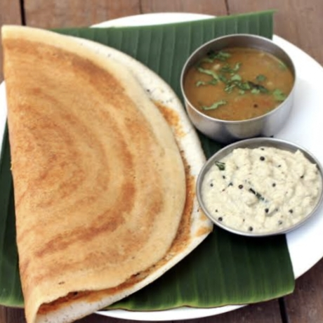

1/2 tsp fenugreek seeds (optional, helps with fermentation)
Water (for soaking and grinding)
Salt to taste
Oil or ghee (for cooking the dosa)

Instructions:
Soak the ingredients:
Rinse the rice and urad dal separately. Soak the rice and fenugreek seeds together in one bowl and the urad dal in another bowl, for about 4-6 hours or overnight.
Grind the batter
Drain the soaked rice, dal, and fenugreek seeds. In a blender or wet grinder, grind the rice and dal together, adding water as needed to form a smooth batter. The consistency should be like pancake batter — not too thick or too runny.
Ferment the batter:
Pour the ground batter into a large bowl, cover it, and let it ferment for 8-12 hours or overnight. The batter will rise and become slightly bubbly.
Prepare the dosa:
Once fermented, stir the batter well and add salt to taste. Heat a non-stick griddle or tava over medium heat. Lightly grease it with oil or ghee.
Cook the dosa:
Pour a ladle of batter onto the hot griddle and spread it in a circular motion to form a thin dosa. Cook until the edges begin to lift and turn golden brown, then flip if desired, or serve as is. Repeat with the remaining batter.
Serve your Dosa with sambar & Chutny..!
కావలసినవిః
1 కప్పు బియ్యం (నానబెట్టడం మంచిది)
1/4 కప్పు ఉడకబెట్టిన పులుసు (స్ప్లిట్ బ్లాక్ గ్రామ్)
బియ్యం మరియు ఉడికించిన పప్పు (మెంతి గింజలతో,ఉపయోగించినట్లయితే) వేర్వేరు గిన్నెలలో సుమారు 4-6 గంటలు లేదా రాత్రిపూట నానబెట్టండి.మిశ్రమాన్ని మెత్తగా గ్రైండ్ చేయండిః
నానబెట్టిన బియ్యం, పప్పు తీసివేయండి.
తడి గ్రైండర్ లేదా బ్లెండర్ ఉపయోగించి, బియ్యం మరియు పప్పు కలిపి, మృదువైన, మందపాటి పిండిని తయారు చేయడానికి అవసరమైనంత తక్కువ నీరు జోడించండి. స్థిరత్వం పాన్కేక్ పిండిని పోలి ఉండాలి.బ్యాటరీని పులియబెట్టండిః
పిండిని పెద్ద గిన్నెకి బదిలీ చేయండి,దానిని వస్త్రంతో కప్పండి మరియు పరిసర ఉష్ణోగ్రతను బట్టి 8-12 గంటలు లేదా రాత్రిపూట పులియబెట్టండి. పిండి పైకి లేచి బబుల్గా మారాలి.
దోసె సిద్ధం చేయండిః
నాన్-స్టిక్ లేదా కాస్ట్-ఐరన్ గ్రిడ్/తవాను మీడియం-హై వేడి మీద వేడి చేయండి
వేడెక్కిన తర్వాత, కొద్దిగా నూనెతో ఉపరితలంపై తేలికగా గ్రీజు వేయండి.
చిక్కటి పిండిలో చిటికెడు పిండిని పోసి, చిటికెడు వెనుక భాగాన్ని ఉపయోగించి సన్నని వృత్తాకారంలో వ్యాప్తి చేయండి.
ఉడికించి సర్వ్ చేయండిః
అంచుల చుట్టూ కొద్దిగా నూనె లేదా నెయ్యి చిమ్ముతూ దోసె బంగారు గోధుమ రంగులోకి మారి మెత్తగా అయ్యే వరకు ఉడికించాలి.
కొన్ని సెకన్ల పాటు తిప్పండి మరియు ఉడికించండి, లేదా మీ ప్రాధాన్యతను బట్టి ఒక వైపు వండిన తర్వాత నేరుగా వడ్డించండి.
వేడి వేడిగా చట్నీ లేదా సాంబార్ తో సర్వ్ చేయండి.
మీ దోసను ఆస్వాదించండి!